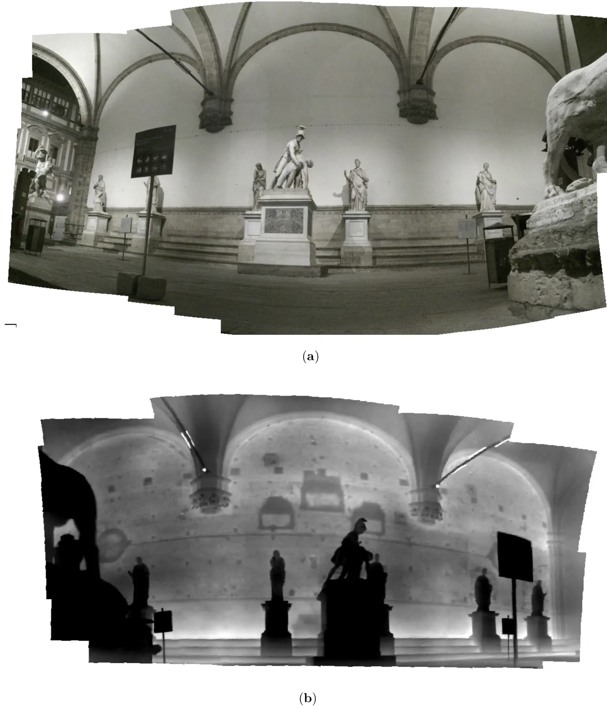
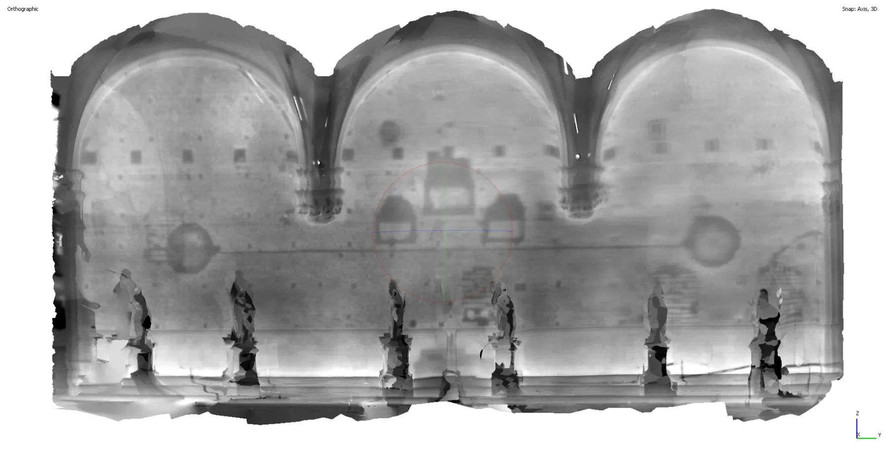

佣兵凉廊：通过三维摄影测量比较 AI 热成像增强方法Loggia dei Lanzi: AI Thermography Enhancement Comparisons through 3D Photogrammetry
提供了面向 SfM 几何结果的图像增强评测和公开数据；应用较专门，需警惕 AI 纹理造成的伪匹配并检查独立精度基准。
一句话工作总结
把硬件与 AI 热像超分放入同一 SfM 流程，用匹配点和三维模型质量检验增强是否带来真实几何收益。
摘要
论文以佛罗伦萨 Loggia dei Lanzi 的热成像调查为案例，对三种分辨率层级进行摄影测量比较：原生分辨率、FLIR UltraMax 硬件 pixel-shift 超分和先进 AI 上采样。作者在 SfM 流程中量化不同输入对特征检测、tie-point 生成以及三维热模型密度和精度的影响，从而判断新增的二维细节是否真正改善三维重建。数据将公开并整合进交互式三维档案与城市级扩展现实应用。
The Loggia dei Lanzi in the Piazza della Signoria is one of Florence's most prominent structures visited by millions every year. Its construction history spans multiple centuries of modification. This paper presents the results of a thermal imaging campaign conducted in December 2025, using a FLIR T1020 HD camera, revealing hidden architectural features including walled-up openings and material transitions beneath the plaster surface. The favorable winter ambient conditions provided a feature-rich benchmark upon which to compare the results of enhancement algorithms and artificial intelligence models. We evaluate the application of AI-based image enhancement to thermal heritage documentation through a comparison of three tiers of image resolution in a photogrammetric Structure-from-Motion (SfM) pipeline: native resolution, FLIR's hardware-based pixel-shifted super-resolution (UltraMax), and state of the art AI-upscaled imagery models. We quantify the effect of each resolution tier on feature detection and tie-point generation, assessing whether the additional detail produced by super-resolution, whether hardware or AI-derived, translates into meaningfully denser and more accurate 3D thermal models. Our results contribute to the emerging intersection of artificial intelligence and heritage thermography by providing a direct comparison of hardware microscanning and AI super-resolution within a thermal photogrammetric workflow for cultural heritage. All datasets are made publicly available and accessible within an interactive 3D archival framework, and integrated into a custom citywide extended reality overlay application.
中文解读摘录
- 原题：Swimm3R: Splatting with Medium-aware SfM for Underwater 3D Reconstruction
- 作者：Minseong Kweon, Junaed Sattar
- 推荐评分：9.2/10
- 核心方法：把空气中几何先验蒸馏到前馈骨干，并用物理 head 联合回归水下成像参数、相机位姿和恢复点云；随后用带 Beta primitives 与散射感知几何梯度的 Underwater Beta Splatting 表示场景。
- 为何值得看：它不是单纯先增强图像再做 SfM，而是把散射、衰减、位姿和几何放进统一框架。论文报告相对 WaterSplatting 平均 PSNR 提升 1.47 dB，RRA@15/RTA@15 分别提高 2.0/2.4 个百分点；需进一步检查 Barbados 数据集规模、跨水体泛化和绝对尺度。
图表/页面预览

{kind=link}

{kind=link}
